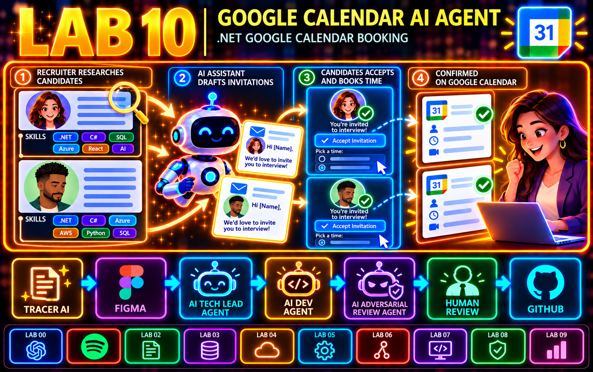

Conversar com um modelo local
Entenda a chamada ao Ollama e acompanhe a resposta chegando em streaming.
Executar o primeiro exemplo →Para desenvolvedores .NET e Python
Experimente IA em problemas de desenvolvimento: revisar um diff, encontrar uma regra no código e transformar uma demanda em tarefas para agents. Projetos pequenos para ler, executar e adaptar, com documentação e limites explícitos.

Por onde começar
Não precisa seguir todos os labs. Entre pelo seu contexto.
Entenda a chamada ao Ollama e acompanhe a resposta chegando em streaming.
Executar o primeiro exemplo →Comece com Markdown, compare o contexto recuperado e avance para regras em código C#.
Começar com documentos →Explore a simulação de descontos, as tarefas de Front/Back e a evolução proposta com Figma.
Explorar a demanda e o Spec Kit →Consulte o README do lab: os exemplos .NET usam o SDK .NET 11; o lab 06 usa Python. Fluxos com modelos locais precisam do Ollama e dos modelos indicados. Spotify e Figma têm requisitos de integração próprios. Os labs 07 e 08 também oferecem demonstrações offline.
RAG recupera trechos para dar contexto ao modelo. MCP conecta ferramentas a assistentes. SDD orienta o desenvolvimento pela especificação; o Spec Kit reúne os artefatos dessa especificação. TL é o papel de liderança técnica que coordena Front e Back.
São experimentos educacionais. Consulte as evidências e pendências de cada lab antes de adaptar o código para produção.
Em destaque / Lab 10
O recruiter reúne informações profissionais públicas de duas pessoas candidatas, como habilidades e experiência, e fornece o contexto relevante ao app .NET. A IA prepara convites direcionados; o recruiter revisa e envia. As pessoas candidatas aceitam escolhendo um horário disponível na página de reservas do Google Calendar.
A capa destaca o Lab 10 e mostra os Labs 00–09 em módulos menores; o Lab 01 é representado pelo ícone do Spotify. Também registra a trilha reutilizável: Tracer AI → Figma → AI Tech Lead Agent → AI Dev Agent → AI Adversarial Review Agent → Human Review → GitHub. O app não pesquisa a web; usa o contexto fornecido pelo recruiter e se concentra no Google Calendar.
A trilha
Em cada README: objetivo, pré-requisitos e como executar. Os links abaixo abrem o código e a documentação no GitHub.
Sua primeira conversa com um modelo local, com resposta em streaming.
Explorar lab 00 →Exponha ferramentas para buscar músicas e consultar a reprodução.
Explorar lab 01 →Use o contexto de um diff para apoiar a revisão de código.
Explorar lab 02 →Faça perguntas sobre Markdown usando embeddings e similaridade.
Explorar lab 03 →Compare contexto, relevância e ruído com diferentes valores de K.
Explorar lab 04 →Encontre regras e validações em C#, com arquivos e linhas como fontes.
Explorar lab 05 →Persista embeddings localmente. Validação da extensão nativa pendente.
Explorar lab 06 →Evidências e pendências do lab 06Simule descontos e acompanhe a delegação Front/Back com regras de negócio e Spec Kit. Replay offline disponível; Ollama real ainda não validado.
Explorar lab 07 →Evidências e pendências do lab 07Explore a proposta de conectar design, negócio e agents. Cliente testado com mocks; captura Figma real não validada.
Explorar lab 08 →Evidências e pendências do lab 08Delegue propostas, confronte-as com uma revisão adversarial independente e confira testes antes de preparar um PR.
Explorar lab 09 →Evidências e limites do lab 09Gere um convite de entrevista com link de reserva; a pessoa candidata escolhe um horário na agenda do recruiter.
Explorar lab 10 →Ver validação e limitesComo chegamos até aqui
Os marcos da trilha, dos fundamentos à coordenação de agents.
Lab 09: propostas de desenvolvimento, revisão adversarial por outro modelo, testes determinísticos e correção com evidências.
Labs 07 e 08: Spec Kit, TL coordenando Front/Back, contexto de negócio e cliente Figma MCP. Lab 06 acrescenta persistência local com SQLite-vec.
Lab 05: recuperação de regras em arquivos C#, com referências de arquivo e linha.
Lab 04: comparação de Top-K para observar precisão, relevância e ruído.
Labs 00 a 03: Ollama, ferramentas MCP, revisão de código e RAG local em memória.
Quem está por trás dos labs
Os labs mostram projetos e decisões técnicas em código. No meu currículo, você encontra minha trajetória, experiências profissionais e formas de contato.